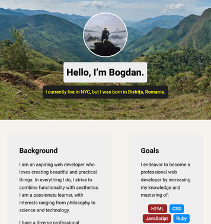

Personal Profile Page
HTML
CSS
This basic personal profile page was the first project that I built for Treehouse’s Front-End Web Development Techdegree. Having been provided with a part of the HTML and CSS, I added images, modified the HTML and added new pages, as well as customized the design. For a complete beginner like myself, being able to accomplish all this felt like magic.